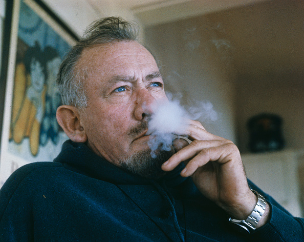
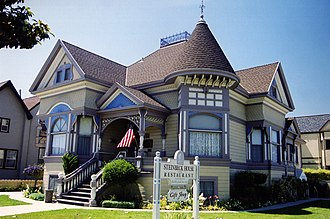
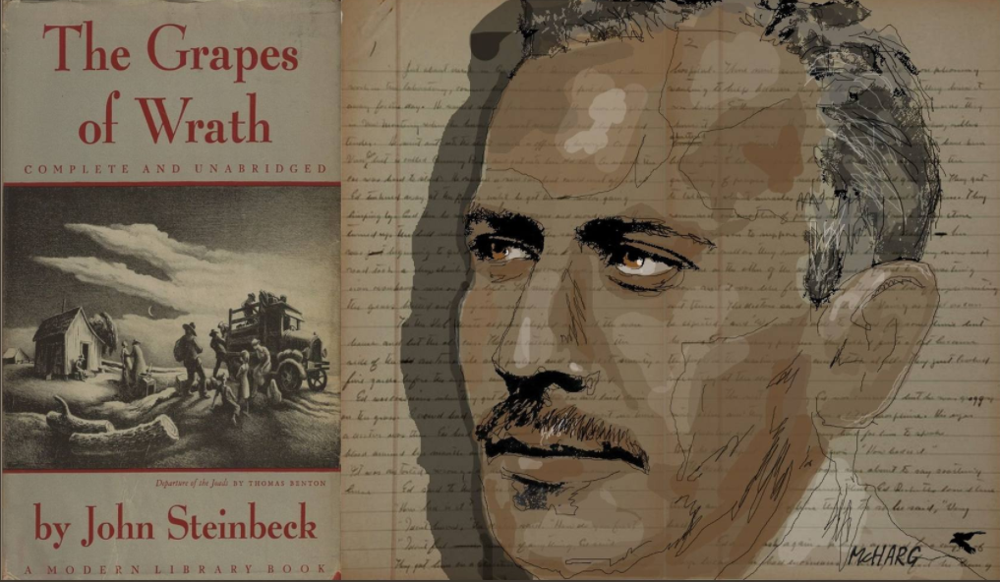
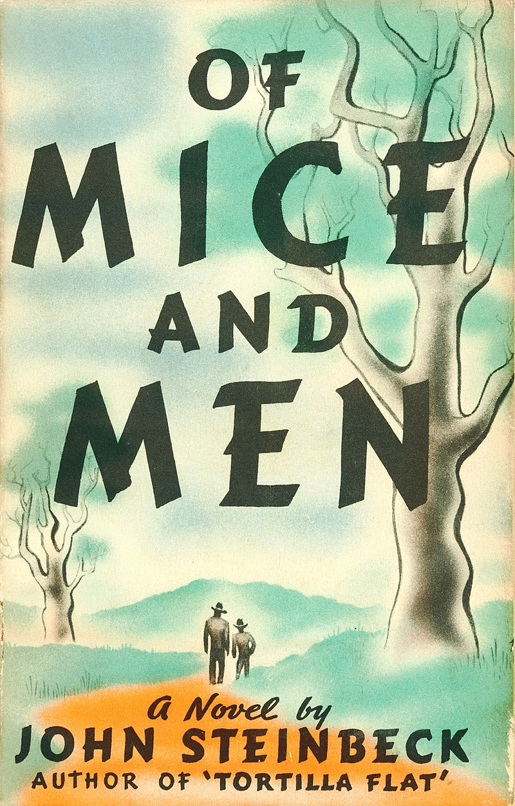
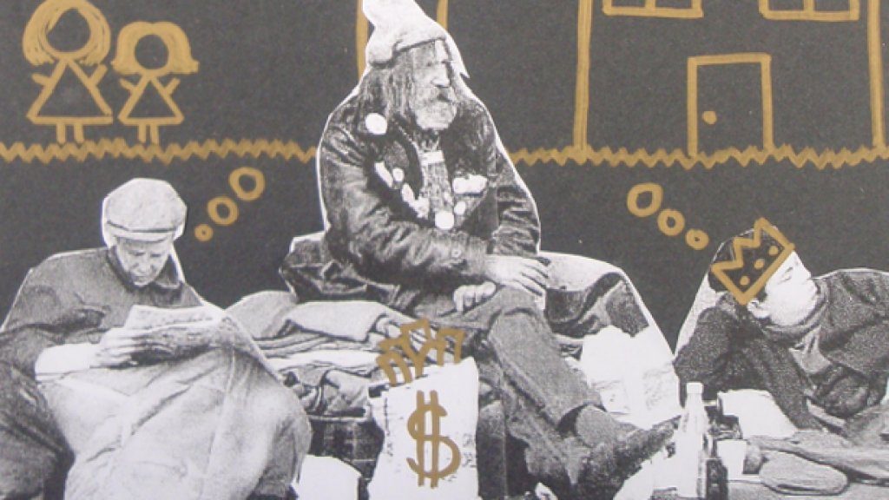
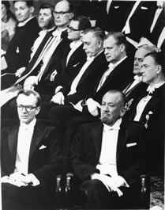
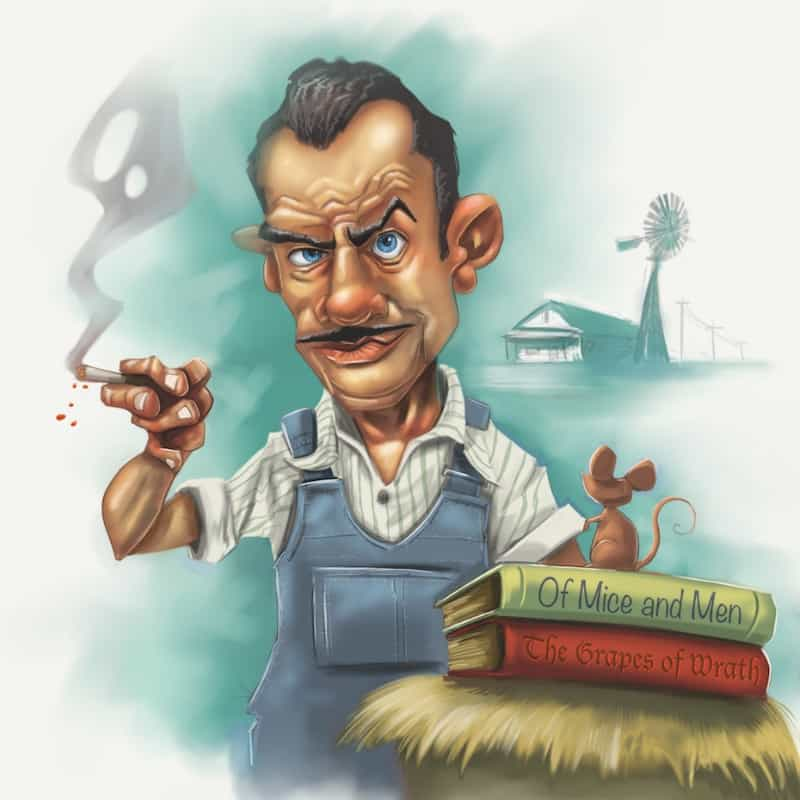

John Steinbeck (1902-1968), born in Salinas, California, came from a family of moderate means.His father, John Ernst Steinbeck, was a county treasurer and his mother, Olive Hamilton Steinbeck, was a teacher. He had two elder sisters, Esther and Elizabeth, and one younger sister, Mary.He was married to Carol Henning between 1930 and 1942. Steinbeck was married to his second wife, Gwyndolyn Conger, between 1943 and 1948, during which time he had two sons. He was married to his third wife Elaine Anderson Scott from 1950 until his death. He worked his way through college at Stanford University but never graduated. In 1925 he went to New York, where he tried for a few years to establish himself as a free-lance writer, but he failed and returned to California. After publishing some novels and short stories, Steinbeck first became widely known with Tortilla Flat, a series of humorous stories about Monterey paisanos.Steinbeck’s novels can all be classified as social novels dealing with the economic problems of rural labour, but there is also a streak of worship of the soil in his books, which does not always agree with his matter-of-fact sociological approach.
After the rough and earthy humour of Tortilla Flat, he moved on to more serious fiction, often aggressive in its social criticism, to In Dubious Battle, which deals with the strikes of the migratory fruit pickers on California plantations. This was followed by Of Mice and Men (1937), the story of the imbecile giant Lennie, and a series of admirable short stories collected in the volume The Long Valley. In 1939 he published what is considered his best work, The Grapes of Wrath, the story of Oklahoma tenant farmers who, unable to earn a living from the land, moved to California where they became migratory workers.It was the top-selling novel of 1939, and it won a Pulitzer Prize in 1940. The Grapes of Wrath also did much to earn the author the Nobel Prize. Among his later works should be mentioned East of Eden, The Winter of Our Discontent, and Travels with Charley, a travelogue in which Steinbeck wrote about his impressions during a three-month tour in a truck that led him through forty American states.
Steinbeck’s strong personal attachment to Monterey was perhaps inevitable. Living in Pacific Grove, in a house owned by his father, Steinbeck wrote stories spiced with the vibrant tales of cannery workers and roughnecks he knew. Cannery Row ignited Steinbeck’s imagination, and his affection for the colorful mix of people there influenced a number of stories and characters. In 1930, Steinbeck met Ed Ricketts, an accomplished marine biologist who operated the Pacific Biological Laboratory at 800 Cannery Row. Ricketts was the inspiration for the character “Doc” in Cannery Row, although he wasn’t called Doc in real life. Ricketts brought Steinbeck along on his outdoor adventures studying the biological mysteries of the “Great Tidal Pool” near Asilomar Beach and on a voyage to the Sea of Cortez. In 1948, Ed Ricketts was hit by a train after his Buick stalled on the tracks near Cannery Row. Today, the location of the train accident is memorialized with a bust of Ricketts at the street corner adjacent to the Monterey Plaza Hotel & Spa. Steinbeck died on December 20, 1968, in New York City. His ashes were placed in the Garden of Memories Cemetery in Salinas.
 John Steinbeck works generally deal with the social and economic issues of rural America. He was awarded the Nobel Prize in Literature “for his realistic and imaginative writings, combining as they do sympathetic humour and keen social perception”. John Steinbeck received the Nobel Medal and Diploma on 10 December 1962 from the Swedish King Gustaf VI Adolf, at the Nobel Prize Award Ceremony held at the Stockholm Concert Hall. The Nobel Medal was donated by the Steinbeck family to the Stanford University Library in 2005.The selection of Steinbeck was heavily criticized, and described as "one of the Academy's biggest mistakes" in one Swedish newspaper. While there were some positive reactions in America, The New York Times asked why the Nobel committee gave the award to an author whose "limited talent is, in his best books, watered down by tenth-rate philosophising", adding, "we think it interesting that the laurel was not awarded to a writer ... whose significance, influence and sheer body of work had already made a more profound impression on the literature of our age". Steinbeck himself, when asked if he deserved the Nobel on the day of the announcement, replied: "Frankly, no."
"It seems to me that if you or I must choose between two courses of thought or action, we should remember our dying and try so to live that our death brings no pleasure to the world.”
John Steinbeck, that most American of American writers, died on the 20th of December 1968.
Death, or the idea of death, of one sort or another, was an integral part of Steinbeck’s writing, whether novels or journalism, not least in his newspaper dispatches home during World War Two and the Vietnam War. It was a constant companion he seemed to cherish, yet always challenged in his work, and scorned by his delight in life, and his delight in tobacco and alcohol.
He knew his own death was coming, had probably realised it after his visit to the Vietnam War at the end of 1966, and in to 1967. It was a visit that allowed him to live with the GIs, as he had done during World War Two, sharing their hardships and dangers, as were his two sons. He simply felt compelled to be there, and support the men and women who were fighting the war, men and women who had no idea who the old guy with the hickory stick was; but they soon warmed to him, and then sort of needed him.